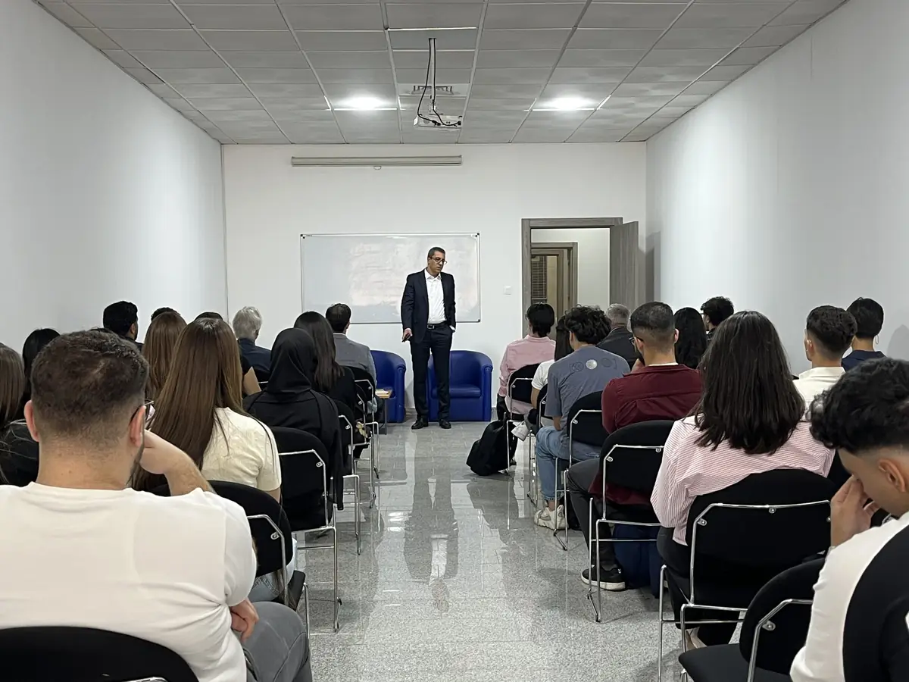

Master · Bac+5
Master en Management des Entreprises
Stratégie, finance, RH et conduite du changement pour diriger un département ou une business unit. Avec l’option d’une année à HEC Montréal (D.E.S.S.).


En bref
- Niveau
- Master · Bac+5
- Durée
- 2 ans
- Diplôme
- Master (Bac+5)
- Statut
- établissement privé agréé par le MESRS
- Rentrée
- septembre – octobre
- Lieu
- Campus de Chéraga, Alger
- Langue
- français
- Admission
- test écrit et entretien
- Frais
- Sur demande
Programme détaillé par année : sur demande au service académique (academique.edu@mdi-alger.com (nouvel onglet))
Service académique et admissions
academique.edu@mdi-alger.com (nouvel onglet)
0560 93 94 10 · 0560 93 94 14
Objectifs
Le Master en Management des Entreprises est un parcours pluridisciplinaire qui permet d’appréhender l’entreprise dans toutes ses dimensions.
Il vise l’acquisition de compétences managériales, stratégiques et situationnelles indispensables aux managers-leaders de demain. Il s’adresse aux diplômés universitaires, aux jeunes professionnels et aux cadres en reconversion qui souhaitent accéder à des postes stratégiques.
Une dimension internationale est possible avec le D.E.S.S. en administration des affaires de HEC Montréal : une première année à MDI, puis une année d’immersion sur le campus de HEC à Montréal.
Les Masters de MDI se déroulent sur deux ans à Chéraga et se concluent par un stage et une soutenance de fin d’études devant un jury. Les diplômes sont délivrés par un établissement privé agréé par le MESRS et certifié ISO 9001:2015.
Compétences développées
- Stratégie et management des organisations
- Leadership et conduite du changement
- Pilotage de la performance et finance d’entreprise
- Management des ressources humaines
- Gouvernance et responsabilité sociétale (RSE)
- Transformation digitale des organisations
Débouchés
Chiffre publié par l’école, toutes formations confondues : 87 % de taux moyen d’insertion trois mois après le diplôme. Plus de 3 000 diplômés depuis la création de l’école.
- Manager opérationnel ou chef(fe) de département
- Chargé(e) de mission auprès de la direction générale
- Consultant(e) en management
- Responsable de business unit
- Entrepreneur(e)
Admission
Licence (Bac+3) ou diplôme équivalent. Test écrit d’admission et entretien individuel avec le jury.
- Préinscription
Dossier déposé auprès du service académique (academique.edu@mdi-alger.com). Les Masters sont ouverts aux titulaires d’une Licence de toute université et aux étudiants en dernière année.
- Test écrit et entretien
Test écrit de type EPAGE, dont un sujet d’exemple est envoyé aux préinscrits, puis entretien individuel avec le jury. En 2025, les candidats en Master ont composé le dimanche 7 septembre, puis lors d’une seconde session les 13 et 14 septembre.
- Inscription et leçon inaugurale
Confirmation de l’inscription et rentrée entre septembre et octobre. Les Masters s’ouvrent par une leçon inaugurale : en 2025, avec Abdenour Houaoui, CEO de Hamoud Boualem.
Financer ses études
Frais de scolarité : sur demande. La grille tarifaire et les modalités de paiement vous sont présentées lors de votre rendez-vous d’orientation ; demandez-la au service des admissions.
- Academic Excellence Scholarships (Master) : catégorie du programme MDI Excellence Scholarships, lancé pour la rentrée 2026 à l’occasion des 30 ans de l’école ; pour la rentrée 2027, le service des admissions indique si elle est reconduite.
- En 2025, bourses partielles ou totales sur dossier : résultats académiques, motivation et projet professionnel (campagne close le 9 octobre 2025).
- Bourses financées par des entreprises partenaires certaines années : des étudiants de Master 2 boursiers de Faderco ont effectué leur stage dans le groupe en 2025.
- Prêts étudiants à taux préférentiels avec Al Salam Bank, partenaire de l’école pour le financement des études.
Formations voisines
Master · Bac+5
Master Comptabilité-Contrôle-Audit
Comptabilité, audit, contrôle de gestion et fiscalité, appris sur des cas d’entreprise. Des diplômés de ce Master exercent chez KPMG et PwC Algérie.
La ficheMaster · Bac+5
Master Marketing Digital & E-Business
Apprenez à bâtir la stratégie digitale d’une marque et à en mesurer les résultats. Projets réels encadrés par des professionnels du digital.
La ficheMaster · Bac+5
Master Management Digital & SI
Pilotez des projets numériques et la transformation digitale d’une entreprise. SI, ERP, méthodes agiles et cybersécurité, avec une partie des cours en anglais.
La ficheDébouchés
Et après le Master.
Le Master forme des managers-leaders pluridisciplinaires ; avec le D.E.S.S. de HEC Montréal, une année sur deux peut se vivre à Montréal.
Métiers visés
- Manager opérationnel ou chef(fe) de département
- Chargé(e) de mission auprès de la direction générale
- Consultant(e) en management
- Responsable de business unit
À retenir
Une année peut se faire à HEC Montréal : le D.E.S.S. en administration des affaires (parcours 1+1).
Bourses et conventions
- Faderco
- Natixis Algérie
- Bel Algérie
- Al Salam Bank
Candidater
Passer à l’étape supérieure.
Titulaire d’une Licence ou en dernière année : préinscrivez-vous, préparez le test écrit avec le sujet d’exemple envoyé par l’école et rencontrez le jury en entretien.